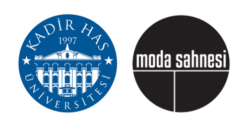

a project by Kadir Has University Students in partnership with moda sahnesi

A Project by Kadir Has University Students in partnership with moda sahnesiLife is not easy, but it’s harder for some. We are all responsible for this, so there is a part we should all play in fixing it. We can’t fix it all, or at least not at once - but every small act of kindness plays a role.
Kadir Has University has come up with the White Doves scholarship, as an act of kindness towards those who are less fortunate in terms of having the necessary resources for a good education.
We are freshmen students of this University, impressed with the world of knowledge introduced to us in a relatively small frame of time, and in spite of the harsh conditions of the pandemic. We celebrate this and aspire to make this available to as many more individuals as possible.
We have partnered with moda sahnesi, which will do a special showing of “Who Killed My Father” with English subtitles, in support of the White Dove scholarship.
The event will be on the 16th of May - to watch, make a donation to the White Dove Scholarship and provide evidence - we will send you a link.